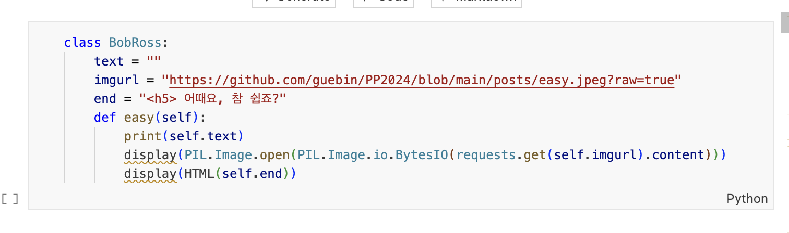

import PIL.Image
from IPython.core.display import HTML
import requests
import random
import pandas as pd
import numpy as np
1. 강의영상
2. Imports
3. 밈(Meme)
A. 하이브
https://imnews.imbc.com/replay/2024/nwtoday/article/6593064_36523.html
B. 하이브사태의 밈화
C. 참 쉽죠
https://www.youtube.com/shorts/W4xSOV96ing
- 밥로스는 누구?: 나무위키 https://namu.wiki/w/밥%20로스
- 참쉽죠 밈: 나무위키 https://namu.wiki/w/참%20쉽죠%3F
- 참쉽죠 밈의 설명: 티스토리 https://everymemes.tistory.com/156
D. 밈이란? 밈과 인터넷 밈의 차이
- 밈이란? (유전자처럼) 복제가능한 something
- 이기적 유전자에서 제시한 개념
- 유전자는 (1) 복제 (2) 변형되면서 (3) 전파되는 속성이 있다는 사실을 관찰
- 종교, 사상, 이념도 유전자처럼 (1) 복제 (2) 변형되면서 (3) 전파되더라..
- 밈 = 유전자의 일반화된 개념 = 복제가능한 something
- 인터넷 밈이란?
- 밈의 한 형태
- 인터넷을 통하여 (1)복제 (2)변형되면서 (3) 전파되는 something
- 어떠한 내용이 많은 사람들에게 그 복제, 변형, 전파 되는것에 성공되었다면 그 어떠한 내용이 “밈화” 되었다고 표현한다.
- 밈의 예시
- 이데올로기: 민주주의, 공산주의와 같은 이념은 오랜시간동안 다양한 문화와 사회에 전파되고 발전해왔음.
- 건축양식: 특정 건축 양식이나 디자인도 밈으로 볼 수 있음. 예를들어 고딕양식의 건축물이나 르네상스 시대의 건축양식은 각 시대와 지역에 문화요소에 맞추어 발전되고 전파되었음.
- 레포트표지: 어떤 사람이 레포트표지 양식을 만들었음. 이 레포트 양식을 후배들에게 전달되었는데 그것이 변형을 거쳐서 이어내려오며 살아있음. 이 역시 “아이디어나 어떠한 요소가 사람들사이에서 (1) 복제 (2) 변형 (3) 재생산 되므로” 밈의 전형적인 특성과 일치한다. 따라서 레포표지양식의 변형 및 확산도 밈으로 간주할 수 있음.
4. 클래스
A. 클래스란? (다른교재 설명)
- 클래스의 정의
- 많은 교재에서 정의를 회피한다.
- 대신에 비유적으로 설명하거나 다른 대상을 가져와서 설명한다.
- 클래스에 대한 비유적 설명 (implicit definition)
점프투파이썬: 클래스는 과자틀과 비슷하다. 클래스란 똑같은 무엇인가를 계속 만들어 낼 수도 있는 설계도면이고 객체란 클래스로 만든 피조물을 뜻한다.
위키피디아: In object-oriented programming, a class is an extensible program-code-template for creating objects, providing initial valuesfor state (member variables) and implementations of behavior (member functions or methods). // 객체 지향 프로그래밍에서 클래스는 상태(멤버 변수) 및 동작 구현(멤버 함수 또는 메서드)에 대한 초기 값을 제공하는 객체 생성을 위한 확장 가능한 프로그램 코드 템플릿입니다.
TCP스쿨: 클래스(class)란 객체를 정의하는 틀 또는 설계도와 같은 의미로 사용
티스토리 블로그: 학생 클래스..?
기타 서적들..
B. 클래스란? (제 생각)
- 클래스에 대한 명시적 정의 (책에 나온것 아니고 제 생각입니다!!): 클래스는 복제, 변형, 확산을 용이하게 하기 위해 만들어진 프로그램의 코드의 단위(extensible program-code-template)이다. 즉 밈이다.
- 생각해보면 클래스를 만들고 사용하는 과정이 인터넷에서 밈을 만들고 노는것과 닮아 있다.
| 단계 | 인터넷밈 | 클래스 | 레포트표지 |
|---|---|---|---|
| 1단계: 구상 | \(\bullet\) 이거 재미있다. \(\bullet\) 밈화하자. |
\(\bullet\) 이 코드 반복해서 자주 쓸 것 같다. \(\bullet\) 이 코드를 쉽게 찍어내는 (복사할 수 있는) 클래스를 만들자 |
\(\bullet\) 레포트 표지를 자주 만들 것 같음 \(\bullet\) 양식파일을 만들까? |
| 2단계: 틀생성 | \(\bullet\) “밈틀”: 복사하고 싶은 속성을 추려 밈을 생산하기에 유리한 틀을 만듬 | \(\bullet\) 클래스의 선언 | \(\bullet\) REPORT_2024_최규빈.hwp 양식파일을 생성 |
| 3단계: 틀 \(\to\) 복제 | \(\bullet\) 밈화: “밈틀”에서 다양한 밈을 만들고 놈 | \(\bullet\) 인스턴스화: 클래스에서 인스턴스를 생산 | \(\bullet\) 레포트 양식표지에서 다양한 레포트를 냄 |
| 4단계: 틀 \(\to\) 틀변경 \(\to\) 복제 | \(\bullet\) 생각해보니까 초기 밈틀은 시시함. \(\bullet\) 초기 밈틀을 수정해 새로운 밈틀을 만들고 더 재미있는 밈을 만들고 놈 |
\(\bullet\) 초기클래스와 비슷한 클래스를 선언할 일이 생김 \(\bullet\) 상속,오버라이딩: 초기클래스를 상속받아 클래스를 새롭게 정의하고 인스턴스를 재 생산 |
\(\bullet\) 공모전에 참가하여 결과보고서 표지를 만들 일이 생김. \(\bullet\) REPORT_2023_최규빈.hwp 를 적당히 변형하여 수정된 틀을 만들고 결과보고서 생산. |
밈이 변형된 예시: 슉슈슈슈슉 ㅅㅂㄹㅁ
- 기원: 트위치 -> 문자 -> 돌하르방
- 전혀 다른 성질을 가진 밈으로 재탄생한 경우임
- 만들어진 계기: 트위치에서 tts를 이용해 조롱을 하기 위해 탄생
- 유명해진 계기: 택배실수
- 슉슈슈슈슉: 돌하르방과 결합.. (돌하르방의 기묘한 자세와 결합하여 더 재미있음)
5. 클래스의 선언 및 사용
A. 클래스 선언
- 클래스를 선언
class BobRoss:
text = ""
imgurl = "https://github.com/guebin/PP2024/blob/main/posts/easy.jpeg?raw=true"
end = "<h5> 어때요, 참 쉽죠?"
def easy(self):
print(self.text)
display(PIL.Image.open(PIL.Image.io.BytesIO(requests.get(self.imgurl).content)))
display(HTML(self.end))- 규칙1: 메소드(=class안에서 정의되는 함수)의 첫번째 입력은 무조건(?)
self - 규칙2: 메소드에서 class안에서 정의된 변수들 (
text,url,end) 를 사용하려면 무조건(?)self.변수이름과 같은 형식으로 사용할 것.
참고1: 사실 규칙1에서 무조건
self를 써야하는건 아님. 그런데 그냥 무조건 쓴다고 생각하자.
참고2: 사실 class안에서 정의된 변수를 쓸때 무조건
self.변수이름와 같은 형식으로 쓰는건 아님.BobRoss.start,BobRoss.url,BobRoss.end와 같이 self 대신 클래스이름을 쓰는 경우도 있음. 그렇지만 여기선 그냥 무조건 쓴다고 생각하자.
- 클래스의 사용 (클래스에서 인스턴스 만들기, 인스턴스에서 메소드 사용하기)
bob = BobRoss() # 클래스에서 인스턴스를 만드는 문법, hwp 양식문서를 컨트로 C+V하여 실제 우리가 사용할 문서를 "찍어내는" 과정bob.easy() # 인스턴스에서 메소드 사용해보기
어때요, 참 쉽죠?
B. 인스턴스의 독립성
- 중간고사 1번해설
mid1 = BobRoss()mid1.text = """
1번은 numpy의 axis의 개념을 잘 활용할 수 있으면 접근하기 쉬운 문제였습니다.
(1) xtrain, xtest를 합치는 과정,
(2) 숫자별 평균을 구하는 과정,
(3) 평균과 가장 비슷한 이미지를 찾는 과정,
(4) 이미지를 합치는 과정
모두 axis을 활용하면 쉽게 해결할 수 있었습니다.
"""mid1.easy()
1번은 numpy의 axis의 개념을 잘 활용할 수 있으면 접근하기 쉬운 문제였습니다.
(1) xtrain, xtest를 합치는 과정,
(2) 숫자별 평균을 구하는 과정,
(3) 평균과 가장 비슷한 이미지를 찾는 과정,
(4) 이미지를 합치는 과정
모두 axis을 활용하면 쉽게 해결할 수 있었습니다.

어때요, 참 쉽죠?
- 중간고사 3번 해설
mid3 = BobRoss()mid3.text = """
3번은 알고리즘을 검토하고 디버깅하는 능력을 봤습니다.
GPT의 도움을 받아 초기코드를 작성하더라도,
(1) 그것이 맞는 알고리즘인지 아닌지 검토하는 능력
(2) 맞는 알고리즘이 아닐 경우 이를 수정할 수 있는 능력
"""mid3.easy()
3번은 알고리즘을 검토하고 디버깅하는 능력을 봤습니다.
GPT의 도움을 받아 초기코드를 작성하더라도,
(1) 그것이 맞는 알고리즘인지 아닌지 검토하는 능력
(2) 맞는 알고리즘이 아닐 경우 이를 수정할 수 있는 능력

어때요, 참 쉽죠?
- 중간고사 3번해설의 이미지 변경
mid3.imgurl = "https://github.com/guebin/PP2024/blob/main/posts/easy2.png?raw=true"mid3.easy()
3번은 알고리즘을 검토하고 디버깅하는 능력을 봤습니다.
GPT의 도움을 받아 초기코드를 작성하더라도,
(1) 그것이 맞는 알고리즘인지 아닌지 검토하는 능력
(2) 맞는 알고리즘이 아닐 경우 이를 수정할 수 있는 능력

어때요, 참 쉽죠?
- 여전히 중간고사 1번해설은 잘 있음
mid1.easy()
1번은 numpy의 axis의 개념을 잘 활용할 수 있으면 접근하기 쉬운 문제였습니다.
(1) xtrain, xtest를 합치는 과정,
(2) 숫자별 평균을 구하는 과정,
(3) 평균과 가장 비슷한 이미지를 찾는 과정,
(4) 이미지를 합치는 과정
모두 axis을 활용하면 쉽게 해결할 수 있었습니다.
어때요, 참 쉽죠?
- 중간고사3번 해설추가 + 제목추가
mid3.text = """
[중간고사 3번문제]
3번은 알고리즘을 검토하고 디버깅하는 능력을 봤습니다.
GPT의 도움을 받아 초기코드를 작성하더라도,
(1) 그것이 맞는 알고리즘인지 아닌지 검토하는 능력
(2) 맞는 알고리즘이 아닐 경우 이를 수정할 수 있는 능력을 평가했습니다.
그래서 GPT에서 얻은 알고리즘을 그대로 복사해서 넣은뒤 약간의 수정만 하면 답입니다.
물론, GPT 도움없이 처음부터 알고리즘을 짜도 괜찮고요
"""mid3.easy()
[중간고사 3번문제]
3번은 알고리즘을 검토하고 디버깅하는 능력을 봤습니다.
GPT의 도움을 받아 초기코드를 작성하더라도,
(1) 그것이 맞는 알고리즘인지 아닌지 검토하는 능력
(2) 맞는 알고리즘이 아닐 경우 이를 수정할 수 있는 능력을 평가했습니다.
그래서 GPT에서 얻은 알고리즘을 그대로 복사해서 넣은뒤 약간의 수정만 하면 답입니다.
물론, GPT 도움없이 처음부터 알고리즘을 짜도 괜찮고요

어때요, 참 쉽죠?
- 중간고사1번해설도 제목 추가.
mid1.text="""
[중간고사 1번문제]
1번은 numpy의 axis의 개념을 잘 활용할 수 있으면 접근하기 쉬운 문제였습니다.
(1) xtrain, xtest를 합치는 과정,
(2) 숫자별 평균을 구하는 과정,
(3) 평균과 가장 비슷한 이미지를 찾는 과정,
(4) 이미지를 합치는 과정
모두 axis을 활용하면 쉽게 해결할 수 있었습니다.
"""mid1.easy()
[중간고사 1번문제]
1번은 numpy의 axis의 개념을 잘 활용할 수 있으면 접근하기 쉬운 문제였습니다.
(1) xtrain, xtest를 합치는 과정,
(2) 숫자별 평균을 구하는 과정,
(3) 평균과 가장 비슷한 이미지를 찾는 과정,
(4) 이미지를 합치는 과정
모두 axis을 활용하면 쉽게 해결할 수 있었습니다.

어때요, 참 쉽죠?
C. 연습문제
# 예제1: 아래의 클래스를 구현하라.
- 클래스내에는 변수 a가 있다. 변수 a의 초기값은 True이다.
- 클래스에는 show()라는 메소드가 있다. show()의 기능은 a의 값을 print하는 기능을 한다.
(풀이)

class Klass:
a = True
def show(self):
print(f"a={self.a}")ins = Klass()ins.aTrueins.show()a=True#
# 예제2: 아래의 클래스를 구현하라.
- 클래스내에는 변수 a가 있다. 변수 a의 초기값은 1이다.
- 클래스에는 up()라는 메소드가 있다. up()의 기능은 a의 값을 1증가시키는 기능을 한다.
(풀이)
class Klass:
a = 1
def up(self):
self.a = self.a+1ins = Klass()ins.a1ins.up()ins.a2ins.up()
ins.up()
ins.up()ins.a5#
# 예제3: 아래의 클래스를 구현하라.
- 클래스내에는 변수 a가 있다. 변수 a의 초기값은 0이다.
- 클래스에는 up(),down(),show()라는 메소드가 있다. 각각은 a의 값을 1증가, a의 값을 1감소, a의 값을 print하는 기능을 한다.
#try
class Test:
a = 0
def up(self):
self.a = self.a + 1
def down(self):
self.a = self.a - 1
def show(self):
print(self.a)(풀이)
class Klass:
a = 0
def up(self):
self.a = self.a+1
def down(self):
self.a = self.a-1
def show(self):
print(f"a={self.a}")ins = Klass()ins.show()a=0ins.up()
ins.show()a=1ins.up()
ins.up()
ins.show()a=3ins.up()
ins.down()
ins.down()
ins.show()a=2#
# 예제4: 아래의 클래스를 구현하라.
- 클래스내에는 변수 a가 있다. 변수 a의 초기값은 0이다.
- 클래스에는 up(),jump(),show() 라는 메소드가 있다.
up()은a의 값을 1증가시킨다.jump()는jump_size를 입력으로 받으며a의 값을jump_size만큼 증가시킨다.show()는a의 값을 print하는 기능을 한다.
class Klass:
a = 0
def up(self):
self.a = self.a+1
def jump(self,jump_size):
self.a = self.a + jump_size
def show(self):
print(f"a={self.a}")ins = Klass()ins.show()a=0ins.up()
ins.jump(3)ins.show()a=4#
# 예제5: 아래의 클래스 BobCount을 구현하라.
- 클래스내에는 변수 imgurl이 있음. 초기값은 https://github.com/guebin/PP2024/blob/main/posts/easy.jpeg?raw=true이다.
- 클래스에는 imshow()이라는 메소드를 가지는데, 메소드는 아래와 같은 기능을 한다.
- 기능1:
imgurl의 그림을 출력 - 기능2: ‘당신은 이 그림을 \(n\)번 보았습니다’ 출력. 여기에서 \(n\)은 그림을 본 횟수
(풀이)
class BobCount:
imgurl = "https://github.com/guebin/PP2024/blob/main/posts/easy.jpeg?raw=true"
n = 0
def imshow(self):
self.n = self.n+1
display(PIL.Image.open(PIL.Image.io.BytesIO(requests.get(self.imgurl).content)))
print(f"당신은 이 그림을 {self.n}번 보았습니다.")a = BobCount()a.imshow()
당신은 이 그림을 5번 보았습니다.b = BobCount()
b.imgurl = "https://github.com/guebin/PP2024/blob/main/posts/easy2.png?raw=true"b.imshow()당신은 이 그림을 6번 보았습니다.#
# 예제6: 아래의 기능을 가지는 RPS 클래스를 구현하라.
- action_space 라는 변수가 있다. 초기값은 빈 리스트.
- act 라는 함수가 있다. 이 함수는 action_space에서 하나의 값을 뽑는 함수이다.
사용예시
guebin = RPS()
guebin.action_space = ['가위','바위']
guebin.act() # 가위, 바위가 1/2의 확률로 출력
hani = RPS()
hani.action_space = ['가위','바위','보']
hani.act() # 가위, 바위, 보가 1/3의 확률로 출력(풀이)
class RPS:
action_space = []
def act(self):
return random.choice(self.action_space)guebin = RPS()guebin.action_space = ['가위','바위']guebin.act()'가위'hani = RPS()hani.action_space = ['가위','바위','보']hani.act()'가위'#
6. self의 의미
A. BobCount 의 다른구현
- 이전 예제를 다시 복습
class BobCount:
imgurl = "https://github.com/guebin/PP2024/blob/main/posts/easy.jpeg?raw=true"
n = 0
def imshow(self):
self.n = self.n+1
display(PIL.Image.open(PIL.Image.io.BytesIO(requests.get(self.imgurl).content)))
print(f"당신은 이 그림을 {self.n}번 보았습니다.")a = BobCount()a.imshow()
당신은 이 그림을 4번 보았습니다.- 위의 예제는 아래와 같이 구현할 수도 있다.
class BobCount:
imgurl = "https://github.com/guebin/PP2024/blob/main/posts/easy.jpeg?raw=true"
n = 0
def imshow(self):
#self.n = self.n+1
display(PIL.Image.open(PIL.Image.io.BytesIO(requests.get(self.imgurl).content)))
print(f"당신은 이 그림을 {self.n}번 보았습니다.")a = BobCount()a.n = a.n + 1
a.imshow()
당신은 이 그림을 3번 보았습니다.a.n = a.n + 1
a.imshow()
당신은 이 그림을 5번 보았습니다.a.n = a.n + 1
a.imshow()
당신은 이 그림을 3번 보았습니다.B. self = 인스턴스의 태명!
- 결국에는 a.n = a.n + 1의 기능을 구현하여 클래스의 imshow 메소드에 넣은것이 self.n = self.n + 1 이다.
class BobCount:
imgurl = "https://github.com/guebin/PP2024/blob/main/posts/easy.jpeg?raw=true"
n = 0
def imshow(self):
self.n = self.n+1 # 이게 원래는 a.n = a.n + 1 으로 구현되어 있었어야 했음.
display(PIL.Image.open(PIL.Image.io.BytesIO(requests.get(self.imgurl).content)))
print(f"당신은 이 그림을 {self.n}번 보았습니다.")- 따라서 self는 a에 대응한다. 즉 self는 인스턴스의 이름을 대신한다. 우리가 하고 싶은 것은 클래스를 선언하는 시점에서 인스턴스가 생성된 이후시점에 대한 어떠한 동작들을 정의하고 싶은 것이다. 그런데 클래스를 설계하는 시점에서는 인스턴스의 이름이 정해지지 않았으므로 (아직 인스턴스가 태어나지도 않음) 이러한 동작들을 정의하기 불편하다. 그래서 클래스를 설계하는 시점에서 그 클래스로부터 만들어지는 인스턴스는 그냥 self라는 가칭으로 부른다. (굳이 비유하면 self는 인스턴스의 태명같은 것임)
- 요약: self의 의미는 (후에 만들어질) 인스턴스의 이름이다. (즉 self는 인스턴스의 태명같은것임)
7. __init__
A. 모티브
- 아래의 예시를 다시 관찰하자.
class RPS:
action_space = []
def act(self):
return random.choice(self.action_space)guebin = RPS() # "클래스->인스턴스"
guebin.action_space = ['가위','바위'] # 이걸 해줘야지 제대로된 인스턴스의 기능을 함
guebin.act()'가위'hani = RPS()
hani.action_space = ['가위','바위','보']
hani.act()'바위'- 인스턴스를 만들때마다 guebin.action_space , hani.action_space 를 재설정해서 제대로된 인스턴스의 기능을 하도록 만드는 것이 귀찮다. \(\to\) guebin을 만들때 guebin.action_space도 같이 초기화하면 어떨까?
# 이전코드
guebin = RPS() # guebin이라는 플레이어를 생성해줘
guebin.action_spcae = ['가위','바위'] # guebin이라는 플레이어가 낼 수 있는 선택은 "가위", "바위" 로 정해줘
# 희망코드
guebin = RPS(['가위','바위']) # 가위와 바위를 낼 수 있는 플레이어 guebin를 생성해줘- 클래스에서 인스턴스를 만드는 시점에서, 내가 사용할 일련의 변수들을 자동으로 선언했으면 좋겠다.
B. __init__ 의 이해
- 아래의 코드를 사용하자.
class RPS:
def __init__(self,action_space):
self.action_space = action_space
def act(self):
return random.choice(self.action_space)guebin = RPS(['가위','바위'])
guebin.action_space['가위', '바위']hani = RPS(['가위','바위','보'])
hani.action_space['가위', '바위', '보']
__init__()은 “클래스 –> 인스턴스”의 과정에서 자동으로 실행되는 어떠한 코드들의 묶음이다.
C. 클래스 디자인 패턴
#1 클래스의 선언: 클래스의 선언은 아래와 같이 하며 클래스의 이름은 대문자로 시작하도록 한다.
# 예시1: 좋은사례
class BobRoss:
???
???# 예시2: 나쁜사례 -- 클래스 이름은 대문자로 시작해야해
class bobRoss:
???
???딴지: 대문가 아니어도 에러는 안나는데..
#2 클래스의 내용: 클래스의 내용은 메소드만을 정의하는데에만 사용한다.
# 예시1: 좋은사례
class RPS:
def __init__(self):
self.action_space = []
def act(self):
return random.choice(self.action_space)# 예시2: 나쁜사례
class RPS:
action_space = []
def act(self):
return random.choice(self.action_space)딴지: 꼭 메소드만 클래스의 내용으로 쓰라는 법이 없긴함.
#3 메소드의 첫번째 입력은 항상 self 로 사용한다.
딴지: 이것도 꼭 그런건 아님
D. 클래스의 디자인 패턴에 따른 예제풀이
# 예제1: 아래의 클래스를 구현하라.
- 클래스내에는 변수 a가 있다. 변수 a는 “클래스 \(\to\) 인스턴스”의 과정에서 초기값이 True로 설정된다.
- 클래스에는 show()라는 메소드가 있다. show()의 기능은 a의 값을 print하는 기능을 한다.
#try
class Test:
def __init__(self):
self.a = True
def show(self):
print(f"a={self.a}")ins = Test()ins.aTrue(풀이)
class Klass:
def __init__(self):
self.a = True
def show(self):
print(f"a={self.a}")ins = Klass()ins.aTrueins.show()a=True#
# 예제2: 아래의 클래스를 구현하라.
- 클래스내에는 변수 a가 있다. 변수 a는 “클래스 \(\to\) 인스턴스”의 과정에서 초기값이 1로 설정된다.
- 클래스에는 up()라는 메소드가 있다. up()의 기능은 a의 값을 1증가시키는 기능을 한다.
#try
class Test2:
def __init__(self):
self.a = 1
def up(self):
self.a = self.a + 1ins = Test2()ins.a1ins.up()ins.a2(풀이)
class Klass:
def __init__(self):
self.a = 1
def up(self):
self.a = self.a+1ins = Klass()ins.a1ins.up()ins.a2ins.up()
ins.up()
ins.up()ins.a5#
# 예제3: 아래의 클래스를 구현하라.
- 클래스내에는 변수 a가 있다. 변수 a는 “클래스 \(\to\) 인스턴스”의 과정에서 초기값이 0으로 설정된다.
- 클래스에는 up(),down(),show()라는 메소드가 있다. 각각은 a의 값을 1증가, a의 값을 1감소, a의 값을 print하는 기능을 한다.
#try
class Test3:
def __init__(self):
self.a = 0
def up(self):
self.a = self.a + a
def down(self):
self.a = self.a - 1
def show(self):
print(f"a={self.a}")ins = Test3()ins.a0ins.show()a=0(풀이)
class Klass:
def __init__(self):
self.a = 0
def up(self):
self.a = self.a+1
def down(self):
self.a = self.a-1
def show(self):
print(f"a={self.a}")ins = Klass()ins.show()a=0ins.up()
ins.show()a=1ins.up()
ins.up()
ins.show()a=3ins.up()
ins.down()
ins.down()
ins.show()a=2#
# 예제4: 아래의 클래스를 구현하라.
- 클래스내에는 변수 a가 있다. 변수 a는 “클래스 \(\to\) 인스턴스”의 과정에서 초기값이 0으로 설정된다.
- 클래스에는 up(),jump(),show() 라는 메소드가 있다.
up()은a의 값을 1증가시킨다.jump()는jump_size를 입력으로 받으며a의 값을jump_size만큼 증가시킨다.show()는a의 값을 print하는 기능을 한다.
class Klass:
def __init__(self):
self.a = 0
def up(self):
self.a = self.a+1
def jump(self,jump_size):
self.a = self.a + jump_size
def show(self):
print(f"a={self.a}")ins = Klass()ins.show()a=0ins.up()
ins.jump(3)ins.show()a=12#
# 예제5: 아래의 클래스 BobCount을 구현하라.
- 클래스내에는 변수 imgurl이 있음. 이 변수는 “클래스 \(\to\) 인스턴스”의 과정에서 초기값이
https://github.com/guebin/PP2024/blob/main/posts/easy.jpeg?raw=true
로 설정된다.
- 클래스에는 imshow()이라는 메소드를 가지는데, 메소드는 아래와 같은 기능을 한다.
- 기능1:
imgurl의 그림을 출력 - 기능2: ‘당신은 이 그림을 \(n\)번 보았습니다’ 출력. 여기에서 \(n\)은 그림을 본 횟수
(풀이)
class BobCount:
def __init__(self):
self.imgurl = "https://github.com/guebin/PP2024/blob/main/posts/easy.jpeg?raw=true"
self.n = 0
def imshow(self):
self.n = self.n+1
display(PIL.Image.open(PIL.Image.io.BytesIO(requests.get(self.imgurl).content)))
print(f"당신은 이 그림을 {self.n}번 보았습니다.")a = BobCount()a.imshow()
당신은 이 그림을 0번 보았습니다.b = BobCount()
b.imgurl = "https://github.com/guebin/PP2024/blob/main/posts/easy2.png?raw=true"b.imshow()
당신은 이 그림을 0번 보았습니다.#
# 예제6: 아래의 기능을 가지는 RPS 클래스를 구현하라.
- action_space 라는 변수가 있다. 이 변수는 “클래스 \(\to\) 인스턴스”의 과정에서 (["가위", "바위"] 와 같은 형태의) 초기값을 입력으로 받는다.
- act 라는 함수가 있다. 이 함수는 action_space에서 하나의 값을 뽑는 함수이다.
사용예시
guebin = RPS(['가위','바위'])
guebin.act()
hani = RPS(['가위','바위','보'])
hani.act()(풀이)
class RPS:
def __init__(self,action_space):
self.action_space = action_space
def act(self):
return random.choice(self.action_space)guebin = RPS(['가위','바위'])guebin.action_space['가위', '바위']guebin.act()'가위'hani = RPS(['가위','바위','보'])hani.action_space['가위', '바위', '보']hani.act()'보'#
8. 파이썬의 자료형
A. 인스턴스의 자료형
- 파이썬에는 자료형이라는게 있었음.
a = [1,2,3]type(a)lista?Type: list String form: [1, 2, 3] Length: 3 Docstring: Built-in mutable sequence. If no argument is given, the constructor creates a new empty list. The argument must be an iterable if specified.
- 그렇다면 아래의 자료형은 뭐지?
class BobRoss:
text = ''
imgurl = "https://github.com/guebin/PP2024/blob/main/posts/easy.jpeg?raw=true"
end = '어때요, 참 쉽죠??'
def easy(self):
print(self.text)
display(PIL.Image.open(PIL.Image.io.BytesIO(requests.get(self.imgurl).content)))
print(self.end)bob = BobRoss()ross = BobRoss()- 타입을 알아보자.
bob?ross?- ??? 타입은 자료형, 즉 int, float, list 이런것 아니었나??
- 지금 bob, ross 의 자료형은 int, float, list 같은게 아니라 BobRoss가 나왔다.
- 가설1: 사실 밥로스를 기리기 위해서 파이썬 내부에
BobRoss라는 자료형이 있었다. 그런데 내가 만든bob이 우연히 그 자료형을 따르는 것! - 가설2: 지금 보니까 인스턴스의 type은 클래스의 이름과 같은 것 같다. 따라서
a = [1,2,3]에서a의 자료형이list인것은 사실list라는 클래스의 존재가 있음을 의미하고,a는 그 클래스에서 생긴 인스턴스라는 의미이다. 즉list자료형을 찍어낼 수 있는 어떠한 클래스가 파이썬에 내부적으로 존재할 것이다.
B. 깨달음1
- 가설2가 맞다? 그렇다면 아래는 모두 어딘가에서 찍혀진 인스턴스이다.
a=[1,2,3]
a?Type: list String form: [1, 2, 3] Length: 3 Docstring: Built-in mutable sequence. If no argument is given, the constructor creates a new empty list. The argument must be an iterable if specified.
a=1,2,3
a?Type: tuple String form: (1, 2, 3) Length: 3 Docstring: Built-in immutable sequence. If no argument is given, the constructor returns an empty tuple. If iterable is specified the tuple is initialized from iterable's items. If the argument is a tuple, the return value is the same object.
a=1
a?Type: int String form: 1 Docstring: int([x]) -> integer int(x, base=10) -> integer Convert a number or string to an integer, or return 0 if no arguments are given. If x is a number, return x.__int__(). For floating point numbers, this truncates towards zero. If x is not a number or if base is given, then x must be a string, bytes, or bytearray instance representing an integer literal in the given base. The literal can be preceded by '+' or '-' and be surrounded by whitespace. The base defaults to 10. Valid bases are 0 and 2-36. Base 0 means to interpret the base from the string as an integer literal. >>> int('0b100', base=0) 4
a='1'
a?Type: str String form: 1 Length: 1 Docstring: str(object='') -> str str(bytes_or_buffer[, encoding[, errors]]) -> str Create a new string object from the given object. If encoding or errors is specified, then the object must expose a data buffer that will be decoded using the given encoding and error handler. Otherwise, returns the result of object.__str__() (if defined) or repr(object). encoding defaults to sys.getdefaultencoding(). errors defaults to 'strict'.
- 그리고 위의 a=[1,2,3]과 같은 것들은 모두 “클래스->인스턴스”에 해당하는 과정이었음
C. 깨달음2
- 생각해보니까 아래와 같이 list를 선언하는 방식도 있었음
a = list()
a[]- 이거 지금 생각하니까
list라는 이름의 클래스에서a라는 인스턴스를 찍어내는 문법이다?!
- 아래도 가능함
a = list((1,2,3))
a?Type: list String form: [1, 2, 3] Length: 3 Docstring: Built-in mutable sequence. If no argument is given, the constructor creates a new empty list. The argument must be an iterable if specified.
- 이것도 지금 보니까
list라는 이름의 클래스에서a라는 인스턴스를 찍어내는 문법이다. 여기에서 (1,2,3)은__init__()의 입력이다.
D. 깨달음3
- 그러고보니까 각 자료형마다 특수한 기능들이 있었음
a = [1,2,3]- a.+tab 을 하면 append, clear 등등이 나온다.
- 이러한 기능은 지금까지 우리가 “list 자료형 특수기능들”이라고 부르면서 사용했었다. 그런데 a가 list클래스에서 생성된 인스턴스라는 관점에서 보면 이러한 기능들은 list클래스에서 정의된 메소드라고 볼 수 있다.
E. 깨달음4
- a.f()는 f(a)로 해석가능하다고 하였다. 이 해석에 따르면 메소드의 첫번째 입력은 메소드가 소속된 인스턴스라고 해석할 수 있다. 즉 a.f()라는 함수의 입력은 a자신이 되는 것이다.
- 동일한 논리로 아래의 코드는 bob.easy()의 입력에서 bob을 넣는다는 의미이다.
class BobRoss:
def __init__(self):
self.text = ''
self.imgurl = "https://github.com/guebin/PP2024/blob/main/posts/easy.jpeg?raw=true"
self.end = '어때요, 참 쉽죠??'
def easy(self):
print(self.text)
display(PIL.Image.open(PIL.Image.io.BytesIO(requests.get(self.imgurl).content)))
print(self.end)bob = BobRoss()- 그래서 메소드의 첫 입력은 항상 self 인 것임.
9. __str__
A. motive
- 아래와 같은 클래스를 관찰하자.
class UpJump:
def __init__(self):
self.a = 0
def up(self):
print(f"a의 값이 {self.a} 에서 {self.a+1} 로 변화합니다.")
self.a = self.a + 1
def jump(self,jump_size):
print(f"a의 값이 {self.a} 에서 {self.a+jump_size} 로 변화합니다.")
self.a = self.a + jump_size
def show(self):
print(f"a = {self.a}")upjump = UpJump()upjump.up()a의 값이 0 에서 1 로 변화합니다.upjump.jump(5)a의 값이 1 에서 6 로 변화합니다.upjump.show()a = 6- 모티브: 생각해보니까 show와 print의 기능이 거의 비슷함 \(\to\) print(upjump)를 하면 upjump.show()와 동일한 효과를 내도록 만들수 있을까? 즉 아래와 같이 할 수 있을까?
print(upjump)
a = 6- 말도 안되는 소리 같음. 왜?
- 이유1:
print()는 파이썬 내장기능이다. 내장기능을 우리가 마음대로 커스터마이징해서 쓰기는 어려울 것 같다. - 이유2: 이유1이 해결된다고 쳐도 문제이다. 그럼 지금까지 우리가 써왔던 수많은
print()의 결과는 어떻게 되는가?
- 그런데 upjump 인스턴스의 자료형(UpJump자료형)에 해당하는 것들만 한정하여 print()를 수정하는 방법이 가능하다면? (그럼 다른 오브젝트들은 수정된 print()에 영향을 받지 않음)
B. 관찰1
- 현재 print(upjump)의 결과는 아래와 같다.
print(upjump)<__main__.UpJump object at 0x7f0438b9f820>upjump는UpJump클래스에서 만들어진 인스턴스이며,upjump가 저장된 메모리주소는0x7f0438b9f820라는 의미
C. 관찰2
- upjump 에는 __str__()이라는 숨겨진 메소드가 있다.
upjump.__str__()'<__main__.UpJump object at 0x7f0438b9f820>'print(upjump)<__main__.UpJump object at 0x7f0438b9f820>print(upjump.__str__())<__main__.UpJump object at 0x7f0438b9f820>결국
print(upjump)는print(upjump.__str__())와 같은 역할
upjump.__str__()'<__main__.UpJump object at 0x7f0438b9f820>'D. 해킹?
- upjump.__str__()의 기능을 재정의하면 print(upjump)의 결과도 바뀌지 않을까??
예비학습: 함수 덮어씌우기 (재정의하기)
def f():
print('asdf')f()asdfdef f():
print('guebin hahaha')f()guebin hahaha이런식으로 함수가 이미 정의되어 있더라도, 내가 나중에 덮어씌우면 그 함수의 기능을 다시 정의한다.
예비학습 끝
- 이제 .__str__()의 기능을 재정의 하여 보자.
class UpJump:
def __init__(self):
self.a = 0
def up(self):
print(f"a의 값이 {self.a} 에서 {self.a+1} 로 변화합니다.")
self.a = self.a + 1
def jump(self,jump_size):
print(f"a의 값이 {self.a} 에서 {self.a+jump_size} 로 변화합니다.")
self.a = self.a + jump_size
def __str__(self):
return f"a = {self.a}"upjump = UpJump()upjump.up()a의 값이 0 에서 1 로 변화합니다.upjump.__str__()'a = 1'print(upjump)
#print(upjump.__str__())a = 1E. 지금까지의 print 다시 확인
- 예시1
a = [1,2,3]
print(a)[1, 2, 3]print(a.__str__())[1, 2, 3]- 예시2
a = {1,2,3}
print(a){1, 2, 3}print(a.__str__()){1, 2, 3}- 예시3
a = np.arange(9).reshape(3,3)
print(a)[[0 1 2]
[3 4 5]
[6 7 8]]a.__str__() # 보기 예쁘게 하려고 수동으로 space를 넣어가면서 사실 조잡하게 출력결과를 컨트롤 하고 있었음.'[[0 1 2]\n [3 4 5]\n [6 7 8]]'print(a.__str__())[[0 1 2]
[3 4 5]
[6 7 8]]파이썬의 비밀:
print(a)는 사실print(a.__str__())의 축약버전이었다.
10. __repr__
A. motive
repr은 representation의 약자이다.
- 모티브: 생각해보니까 print를 해서 우리가 원하는 정보를 확인하는건 아니었음
a = [1,2,3]a[1, 2, 3]- 의문: a + 엔터는 print(a) + 엔터와 같은 효과인가?
print(a)[1, 2, 3]a[1, 2, 3]- 반례
a = np.arange(9).reshape(3,3)
aarray([[0, 1, 2],
[3, 4, 5],
[6, 7, 8]])print(a)[[0 1 2]
[3 4 5]
[6 7 8]]B. __repr__ 의 역할
- a + 엔터와 print(a) + 엔터가 다른 경우도 있다.
- 추측: 서로 다른 숨겨진 기능이 있을 것이다. 즉
print(a) + 엔터가print(a.__str__()) + 엔터의 축약이듯이,a+엔터는 다른 무엇인가의 축약일 것이다. - 결론: 추측이 맞다.
a+엔터는print(a.__repr__()) + 엔터의 축약이다.
print(a)[[0 1 2]
[3 4 5]
[6 7 8]]print(a.__str__())[[0 1 2]
[3 4 5]
[6 7 8]]aarray([[0, 1, 2],
[3, 4, 5],
[6, 7, 8]])print(a.__repr__())array([[0, 1, 2],
[3, 4, 5],
[6, 7, 8]])C. 연습
class UpJump:
def __init__(self):
self.a = 0
def up(self):
print(f"a의 값이 {self.a} 에서 {self.a+1} 로 변화합니다.")
self.a = self.a + 1
def jump(self,jump_size):
print(f"a의 값이 {self.a} 에서 {self.a+jump_size} 로 변화합니다.")
self.a = self.a + jump_size
# def __str__(self):
# return f"a = {self.a}"
def __repr__(self):
return f"a = {self.a}"upjump = UpJump()upjumpa = 0print(upjump)a = 0D. __repr__(), __str__() 의 관계
- 만약에 __repr__() 만 정의되었고 __str__()이 정의되지 않았다면 __repr__()의 내용이 __str__()의 내용을 대신한다. (하지만 역은 성립하지 않음)
class UpJump:
def __init__(self):
self.a = 0
def up(self):
print(f"a의 값이 {self.a} 에서 {self.a+1} 로 변화합니다.")
self.a = self.a + 1
def jump(self,jump_size):
print(f"a의 값이 {self.a} 에서 {self.a+jump_size} 로 변화합니다.")
self.a = self.a + jump_size
def __repr__(self):
return f"__repr__()이 실행된 결과: a = {self.a}"upjump = UpJump()print(upjump)__repr__()이 실행된 결과: a = 0upjump__repr__()이 실행된 결과: a = 0- 역은 성립안함! 즉 __str__() 만 정의되었고 __repr__()이 정의되지 않은경우에는 __str__()의 내용이 __repr__()의 내용을 대신할 수 없다.
class UpJump:
def __init__(self):
self.a = 0
def up(self):
print(f"a의 값이 {self.a} 에서 {self.a+1} 로 변화합니다.")
self.a = self.a + 1
def jump(self,jump_size):
print(f"a의 값이 {self.a} 에서 {self.a+jump_size} 로 변화합니다.")
self.a = self.a + jump_size
def __str__(self):
return f"__str__()이 실행된 결과: a = {self.a}"upjump = UpJump()print(upjump)__str__()이 실행된 결과: a = 0upjump<__main__.UpJump at 0x7f0438bbda80>파이썬의 비밀: 대화형콘솔에서
a+엔터하여 나오는 출력결과는print(a.__repr__())이라고 생각할 수 있다. (생각할수 있다? 아닐 수도 있다는 거야?)
11. _repr_html_
A. motive
- 모티브: 요즘에는 IDE의 발전에 따라서 인스턴스이름 + 엔터 를 입력할때 나오는 출력의 형태도 다양해지고 있음.
df = pd.DataFrame({'a':[1,2,3],'b':[2,3,4]})df| a | b | |
|---|---|---|
| 0 | 1 | 2 |
| 1 | 2 | 3 |
| 2 | 3 | 4 |
- 예쁘게 나온다… 이건 근데 문자열따위로 구현할 수 있는 출력 기능이 아닌것 같은데?
print(df.__repr__()) a b
0 1 2
1 2 3
2 3 4print(df.__str__()) a b
0 1 2
1 2 3
2 3 4display(HTML(df._repr_html_()))| a | b | |
|---|---|---|
| 0 | 1 | 2 |
| 1 | 2 | 3 |
| 2 | 3 | 4 |
- 사실
df+엔터는print(df.__repr__())의 축약이 아니라display(HTML(df._repr_html_()))의 축약이다.
B. _repr_html_ 의 역할
df._repr_html_()'<div>\n<style scoped>\n .dataframe tbody tr th:only-of-type {\n vertical-align: middle;\n }\n\n .dataframe tbody tr th {\n vertical-align: top;\n }\n\n .dataframe thead th {\n text-align: right;\n }\n</style>\n<table border="1" class="dataframe">\n <thead>\n <tr style="text-align: right;">\n <th></th>\n <th>a</th>\n <th>b</th>\n </tr>\n </thead>\n <tbody>\n <tr>\n <th>0</th>\n <td>1</td>\n <td>2</td>\n </tr>\n <tr>\n <th>1</th>\n <td>2</td>\n <td>3</td>\n </tr>\n <tr>\n <th>2</th>\n <td>3</td>\n <td>4</td>\n </tr>\n </tbody>\n</table>\n</div>'HTML(df._repr_html_())| a | b | |
|---|---|---|
| 0 | 1 | 2 |
| 1 | 2 | 3 |
| 2 | 3 | 4 |
참고: 그럼 df.__repr__()의 역할은 뭐야?
- 대화형콘솔중 HTML 출력을 지원하면
오브젝트이름+엔터는display(HTML(df._repr_html_())) + 엔터의 효과 - 대화형콘솔중 HTML 출력을 지원하지 않으면
오브젝트이름+엔터는print(df.__repr__()) + 엔터의 효과

C. _repr_html_(), __repr__(), __str__() 의 관계
_repr_html_() |
__repr__() |
__str__() |
a + Enter |
print(a) |
|---|---|---|---|---|
| O | O | O | _repr_html_() |
__str__() |
| O | O | X | _repr_html_() |
__repr__() |
| O | X | O | _repr_html_() |
__str__() |
| O | X | X | _repr_html_() |
기본출력 |
| X | O | O | __repr__() |
__str__() |
| X | O | X | __repr__() |
__repr__() |
| X | X | O | 기본출력 | __str__() |
| X | X | X | 기본출력 | 기본출력 |
- 실습해보자.
class UpJump:
def __init__(self):
self.a = 0
def up(self):
print(f"a의 값이 {self.a} 에서 {self.a+1} 로 변화합니다.")
self.a = self.a + 1
def jump(self,jump_size):
print(f"a의 값이 {self.a} 에서 {self.a+jump_size} 로 변화합니다.")
self.a = self.a + jump_size
# def _repr_html_(self):
# return f"_repr_html_()이 실행된 결과: a = {self.a}"
# def __repr__(self):
# return f"__repr__()이 실행된 결과: a = {self.a}"
# def __str__(self):
# return f"__str__()이 실행된 결과: a = {self.a}"upjump = UpJump()print(upjump)<__main__.UpJump object at 0x7f043861d450>upjump<__main__.UpJump at 0x7f043861d450>파이썬의 비밀: 대화형콘솔에서
a+엔터하여 나오는 출력결과는print(a.__repr__()) + 엔터혹은display(HTML(a._repr_html_())) + 엔터이다.
직관: 클래스에서 정의된 숨겨진 메소드 __????__ 들이 사실 파이썬의 비밀 덩어리였음!!!
12. 연습문제들
# 예제: Student 클래스를 생성지침 및 사용예시를 참고하여 설계하라.
생성지침
변수(attributes)
name: 이름을 저장하는 변수age: 나이를 저장하는 변수semester: 학기를 저장하는 변수
함수(methods,attributes)
__init__: name, age, semester 세 가지 매개변수를 입력받아 인스턴스의 attribute으로 저장__str__: 인스턴스의 정보(이름,나이,학기)를 문자열 형태로 반환
사용예시
# 사용 예시
boram = Student(name='김보람', age=20, semester=1)
print(boram)이름: 김보람
나이: 20
학기: 1(풀이)
class Student:
def __init__(self, name, age, semester):
self.name = name
self.age = age
self.semester = semester
def __str__(self):
text = f"이름: {self.name}\n나이: {self.age}\n학기: {self.semester}"
return text# 사용 예시
boram = Student(name='김보람', age=20, semester=1)
print(boram)이름: 김보람
나이: 20
학기: 1# 사용 예시
guebin = Student(name='최규빈', age=21, semester=3)
print(guebin)이름: 최규빈
나이: 21
학기: 3#
# 예제: RPS 클래스를 생성지침 및 사용예시를 참고하여 설계하라.
생성지침
변수(attributes)
action_space(리스트): 사용 가능한 선택지인 ‘가위’, ‘바위’, ’보’로 이루어진 리스트actions(리스트): 선택한 동작을 기록하는 리스트
함수(methods,attributes)
__init__:action_space를 입력으로 받아 인스턴스의 변수로 저장한다. 그리고actions를 빈 리스트로 초기화한다.act:action_space무작위로 하나의 선택지를 고르고,actions에 선택한 동작을 기록한다.__repr__: 클래스의 정보를 문자열로 반환한다. 반환된 문자열에는action_space와actions의 내용이 포함되어야 한다.
클래스 설명: RPS 클래스는 가위, 바위, 보 중 하나를 선택하고, 선택한 동작을 기록하는 클래스이다. 사용 가능한 선택지는 action_space에 저장되고, 선택한 동작은 actions에 기록된다. 클래스의 정보는 인스턴스이름 + 엔터 을 입력하였을 경우 문자열로 표현되며, 이 문자열에는 낼 수 있는 패(action_space)와 기록된 동작(actions)이 있다.
사용예시
예시1: 인스턴스의 생성
a = RPS(['가위','바위','보'])예시2: 인스턴스의 속성확인
a.action_space, a.actions(['가위', '바위', '보'], [])예시3: __repr__의 사용예시
a낼 수 있는 패: ['가위', '바위', '보']
기록: []예시4: act method의 사용예시
for i in range(5):
a.act()a.action_space, a.actions(['가위', '바위', '보'], ['가위', '가위', '바위', '가위', '보'])a낼 수 있는 패: ['가위', '바위', '보']
기록: ['가위', '가위', '바위', '가위', '보'](풀이)
class RPS:
def __init__(self,action_space):
self.action_space = action_space
self.actions = []
def act(self):
self.actions.append(random.choice(self.action_space))
return self.actions[-1]
def __repr__(self):
text = f"낼 수 있는 패: {self.action_space}\n기록: {self.actions}"
return text예시1: 인스턴스의 생성
a = RPS(['가위','바위','보'])예시2: 인스턴스의 속성확인
a.action_space, a.actions(['가위', '바위', '보'], [])예시3: __repr__의 사용예시
a낼 수 있는 패: ['가위', '바위', '보']
기록: []예시4: act method의 사용예시
for i in range(5):
a.act()a.actions['보', '보', '보', '바위', '보']a.action_space, a.actions(['가위', '바위', '보'], ['보', '보', '보', '바위', '보'])a낼 수 있는 패: ['가위', '바위', '보']
기록: ['보', '보', '보', '바위', '보']#
# 예제. RPS클래스에서 player a와 player b를 만들어라. Player a는 [‘가위’,‘보’] 중에 하나를 랜덤으로 낸다. 그리고 Player b는 [‘가위’] 만 낸다. 누가 더 유리한가? 100회 가상대결을 해보고 누가 더 유리하게 나왔는지 판단하라.
(풀이)
def checkWinner(a_action,b_action):
if a_action == b_action:
return "무승부"
elif (a_action,b_action) in (('가위','보'), ('바위','가위'), ('보','바위')):
return "a의 승리"
else:
return "b의 승리"a = RPS(['가위','보'])
b = RPS(['가위'])
#--#
for i in range(100):
a.act()
b.act()
#--#
results = [checkWinner(a_action, b_action) for a_action, b_action in zip(a.actions, b.actions)]
{s:results.count(s) for s in set(results)}{'무승부': 6, 'b의 승리': 4}참고 map + list 를 이용해도 괜찮음.
[checkWinner(a_action, b_action) for a_action, b_action in zip(a.actions, b.actions)]['무승부', '무승부', 'b의 승리', 'b의 승리', '무승부', '무승부', 'b의 승리', 'b의 승리', '무승부', '무승부']list(map(checkWinner,a.actions,b.actions))['무승부', '무승부', 'b의 승리', 'b의 승리', '무승부', '무승부', 'b의 승리', 'b의 승리', '무승부', '무승부']4. RPS클래스에서 player a와 player b를 만들어라. Player a는 [‘가위’,‘보’] 중에 하나를 낼 수 있다. 그리고 Player b는 [‘가위’,‘바위’] 중 하나를 낼 수 있다. 누가 더 유리한가? 1000회 가상대결을 해보고 누가 더 유리하게 나왔는지 판단하라.
def checkWinner(a_action,b_action):
if a_action == b_action:
return "무승부"
elif (a_action,b_action) in (('가위','보'), ('바위','가위'), ('보','바위')):
return "a의 승리"
else:
return "b의 승리"a = RPS(['가위','보'])
b = RPS(['가위','바위'])
#--#
for i in range(1000):
a.act()
b.act()
#--#
results = [checkWinner(a_action, b_action) for a_action, b_action in zip(a.actions, b.actions)]
{s:results.count(s) for s in set(results)}{'무승부': 253, 'a의 승리': 238, 'b의 승리': 509}5. 아래의 코드를 관찰하고 결과를 설명하라.
예시1
a = list('123')
a['1', '2', '3']예시2
a = list()
a.__init__('123')
# 위의 두 코드는 a=list('123') 와 같은효과
a['1', '2', '3']예시3
a = list()
a.__init__('123')
#a=list('123')
a.__init__() #a=list()와 같은 효과, 리스트를 초기화하는 특이한 코드
a[]파이썬의 비밀: list(‘123’)은 사실 자료형을 변환하는 것이 아니라, ’123’을 list 클래스의
__init__()입력으로 하여 “list 클래스 \(\to\) 인스턴스” 를 수행하는 코드로 해석가능하다.